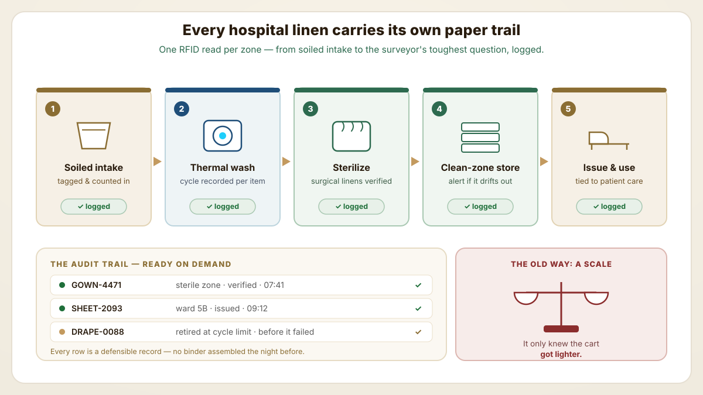
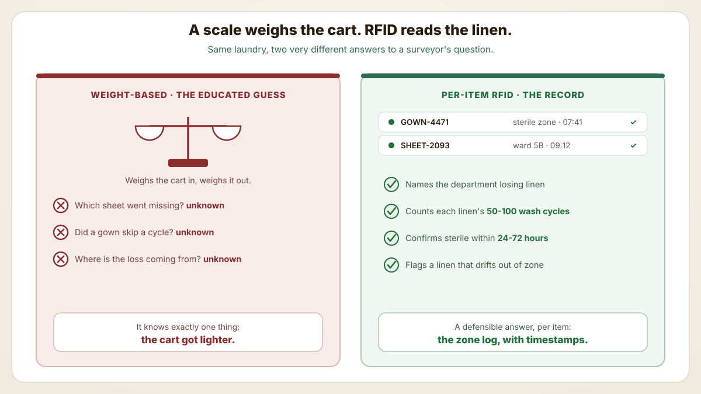
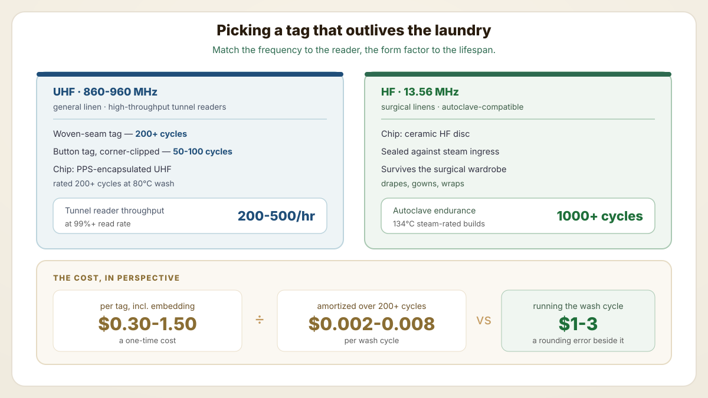
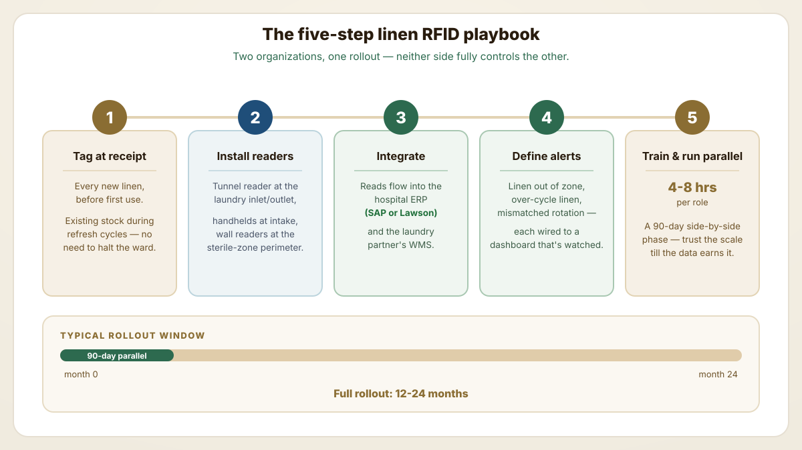
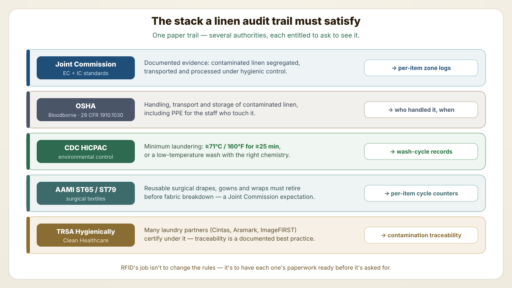
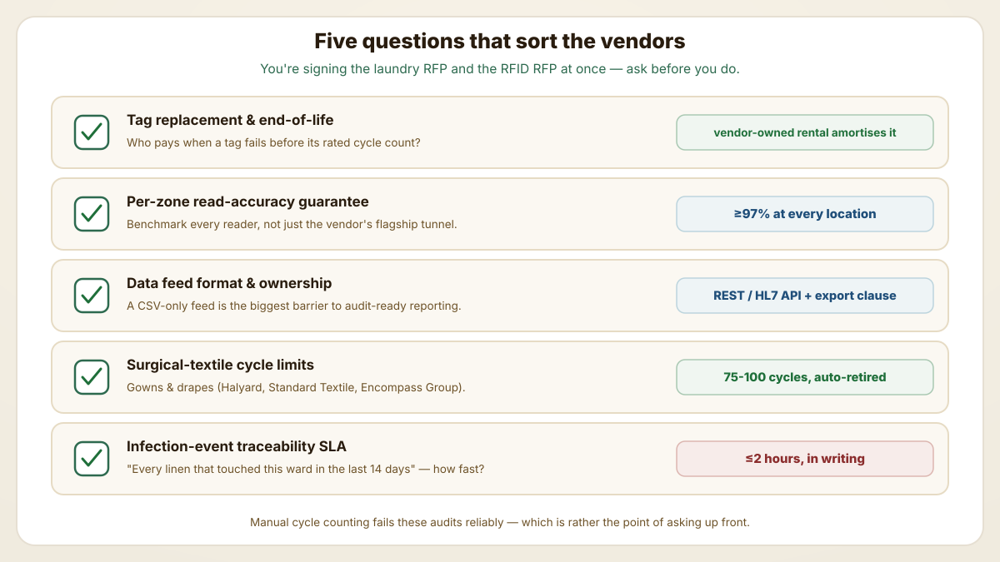

A Joint Commission surveyor asks you to prove a specific sterile gown was laundered to standard before it was issued. For decades the honest answer lived on a loading-dock scale — which only ever knew that the cart got lighter. RFID trades that educated guess for a per-item record of every wash, sterilization and zone crossing: the audit trail inspectors actually expect.

One read per zone builds an audit trail that's ready on demand — no binder assembled the night before.
Hospital linen loss runs 5-15% per year — for a 200-bed hospital with $1M annual linen spend, that's $50K-150K walking out the door as misrouted, stolen or simply unaccounted-for linens.
Purpose-built linen RFID survives 100-200 industrial wash cycles plus autoclave or chemical sterilization — so the per-item lifecycle data audit teams ask for outlives the linen itself.
One tag, two payoffs: per-linen wash-cycle counting retires fabric before it fails, and the same read log flags the moment a sterile linen wanders out of the clean zone.
A Joint Commission surveyor asks how you can prove a specific sterile gown was laundered to standard before it was issued. For decades the honest answer lived on a loading-dock scale: the cart weighed what it should, so presumably everything inside was fine. A scale, though, cannot tell you which sheet went missing or whether one gown skipped a cycle — it only knows the cart got lighter. RFID trades that educated guess for per-item visibility, addressing infection control, inventory and audit needs in a single read.

A scale weighs the cart. RFID reads the linen — and answers the question the scale can't.
A retail hangtag lives a pampered life next to what hospital linen endures — chemical sterilization, autoclave heat for surgical pieces, and industrial wash cycles by the hundred. The tag has to outlast conditions engineered to sterilize everything else in the room, which is exactly why tag selection matters more here than in standard laundry.

Match the frequency to the reader, the form factor to the lifespan — then check the per-cycle math.
Here's the wrinkle that sinks rollouts: the linen lives in two houses at once — the hospital's central supply department and the contracted laundry vendor's wash floor. Neither side fully controls the other, so coordination isn't a nicety, it's the whole game. The five-step playbook below comes from successful 2024-2026 deployments.

Two organizations, one rollout — with a 90-day side-by-side phase before the scale retires.
Few phrases empty a room like "compliance framework," yet hospital linen answers to several at once, and a surveyor may open on any of them. MEDtegrity's compliance overview, CORE Linen Services' regulatory primer and the AHE (Association for the Health Care Environment) guidelines keep pointing hospital linen programs at the same set of authorities. RFID's real value is having each framework's documentation ready before it is asked for.

One paper trail, five authorities — RFID's job is to have each one's documentation ready.
Most hospital linen RFID programs do not run in-house — they live inside the contracted laundry partner's wash facility, with hospital intake and sterile-zone readers as the customer-side endpoints. So vendor selection quietly overlaps two RFPs at once — the laundry RFP and the RFID RFP — and the hospital signs for both. Across public vendor literature (Cintas, ImageFIRST, Aramark, plus published RFID-vendor material), five buyer questions reliably separate the vendors who can carry the program from those who cannot.

Five questions to ask before signing — because you're signing two RFPs at once.
Each linen's location and zone history is logged. If a contaminated linen is identified, RFID quickly reveals every other linen that shared its zone or wash cycle, enabling fast quarantine. Without RFID, the investigation can take days; with RFID, minutes.
Yes — purpose-built linen RFID tags survive 80-90°C wash cycles with industrial detergent and bleach for 200+ cycles. Surgical-grade autoclave-rated tags survive 134°C steam for 1000+ cycles. Always specify the actual cycle conditions when ordering tags.
Most major US hospital laundry vendors (Cintas, Aramark, ImageFIRST, Healthcare Services Group) support RFID integration. Tag selection and reader installation usually negotiated as part of laundry contract; some vendors prefer their own tag standards.
12-24 months for a 200-bed hospital. Driven 60% by loss reduction (5-15% baseline → <2%) and 40% by labor savings (eliminated manual sorting and counting). Larger hospitals see faster payback due to volume. Multi-site systems often see faster payback than single-site because the laundry-vendor capex is amortised across more facilities.
By default, whoever installs the readers and writes the tags 'owns' the data unless a contract states otherwise. The recommended position is to negotiate hospital ownership with full read/export rights, even when tags are vendor-owned. Joint Commission, OSHA and CDC HICPAC inspections all interview the hospital — not the laundry vendor — so the hospital must be able to produce per-item event history without vendor delay.
They are separate workflows. Surgical sponge counting uses HF RFID-tagged sponges that are FDA-cleared for in-vivo detection (Stryker SurgiCount, STERIS ORLocate). Reusable surgical drapes and gowns use industrial-laundry UHF or HF tags rated for autoclave (where applicable) plus chemical wash. The same hospital often runs both — typically through different vendors — and they share little infrastructure, though both feed the central infection-control reporting layer.
Industrial-laundry RFID tags, autoclave-rated surgical linens and Joint Commission audit-ready dashboards.
Primary regulatory and industry sources cited during Joint Commission, OSHA and CDC linen-program audits.
Get purpose-built linen tags, autoclave-rated surgical options and audit-ready dashboards spec'd to your wash conditions and compliance frameworks.
src/content/editorial/blog/hospital-linen-rfid-joint-commission-audit.json with the six tokenized SVGs in public/diagrams/blog/. Every number, spec, price, standard and internal link is unchanged from the original — only the voice, structure and visuals were added (Tier-B house rule: dry, light wit on safe targets, never on clinical outcomes).